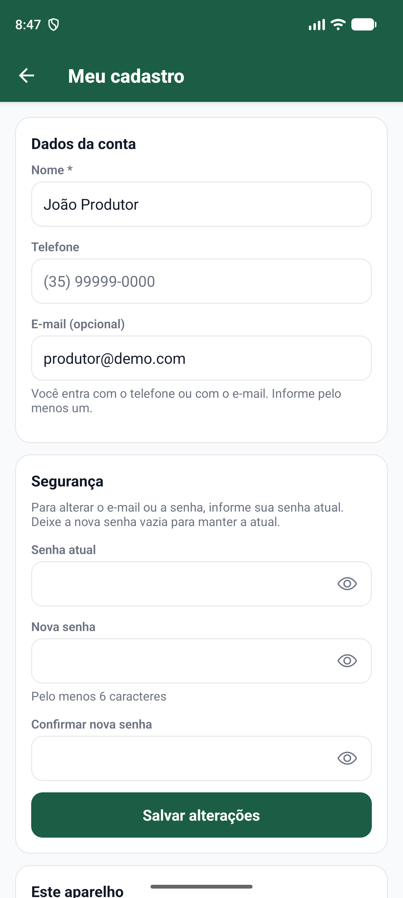

1. Entrar no App e Atualizar Meu Cadastro
Entre com e-mail ou telefone e mantenha seus dados e senha atualizados em "Meu cadastro".

1
2
3
4
5
1 Nome exibido na propriedade
2 Telefone com DDD para login
3 E-mail opcional de acesso
4 Senha atual (para confirmar)
5 Nova senha (mín. 6 dígitos)
PASSO A PASSO NA TELA:
- 1Nome * Obrigatório: digite seu nome completo ou como prefere ser identificado.
- 2Telefone Opcional*: celular com DDD (ex.:
(35) 99999-0000). Pode ser usado para entrar no app. - 3E-mail (opcional) Opcional*: informe telefone ou e-mail (pelo menos um deve estar preenchido).
- 4Senha atual Ao alterar: necessária para confirmar troca de e-mail ou senha.
- 5Nova senha e Confirmação Opcional: mínimo de 6 caracteres. Deixe em branco para manter a senha atual.
💡 Dica prática: A conta só precisa de internet na primeira vez que você entra. Depois disso, o aplicativo abre e grava normalmente mesmo sem sinal no curral.